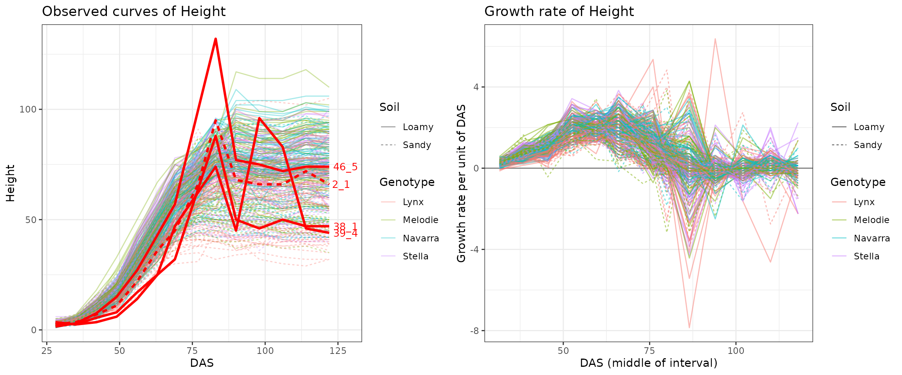
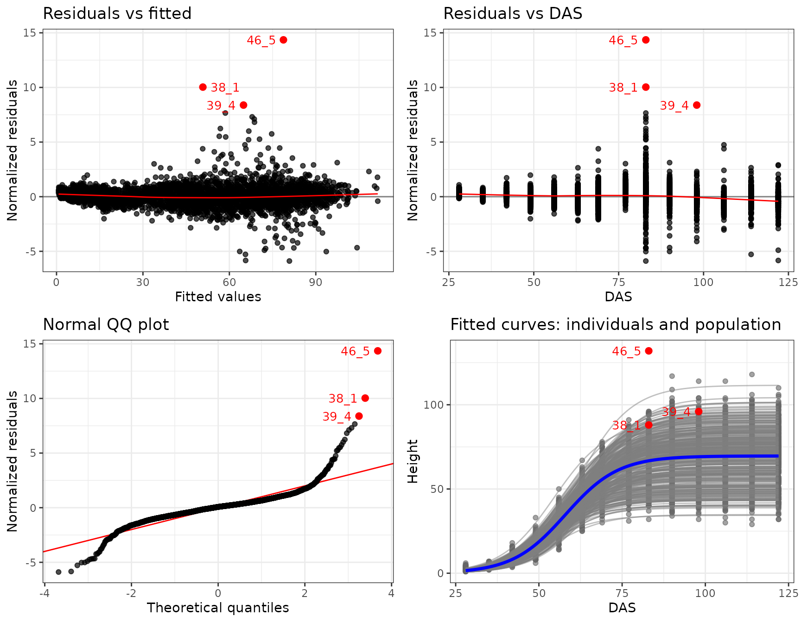

viewcurves() opens an app to step through the observed
curves of the individuals of a data set:
library(gcTMB)
viewcurves(FabaHeights26, x = "DAS", y = "Height", id = "Plant_ID", covariates = c("Genotype", "Soil"),
output = "html")The app below is that call, running in your browser. It can take half
a minute to start the first time, and it responds more slowly than the
app does when viewcurves() is run in R on your own
computer.
Outliers in the data
With output = "jpeg", viewcurves() draws
the curves and growth rates of all plants. The plants with the steepest
increases and the plants with the steepest decreases between two
measurements, outliers of each, are drawn in red and
reported:
library(gcTMB)
vc <- viewcurves(FabaHeights26, x = "DAS", y = "Height", id = "Plant_ID", covariates = c("Genotype", "Soil"),
output = "jpeg", outliers = 3)
#> Largest increase between successive observations: Plant_ID 39_4 (growth rate 6.38 from DAS 90 to 98)
#> Largest increase between successive observations: Plant_ID 46_5 (growth rate 5.36 from DAS 69 to 83)
#> Largest increase between successive observations: Plant_ID 2_1 (growth rate 4.83 from DAS 77 to 83)
#> Largest decrease between successive observations: Plant_ID 46_5 (growth rate -7.86 from DAS 83 to 90)
#> Largest decrease between successive observations: Plant_ID 38_1 (growth rate -5.43 from DAS 83 to 90)
#> Largest decrease between successive observations: Plant_ID 39_4 (growth rate -4.62 from DAS 106 to 114)
Outliers in the residuals
The validation plots of a fitted model draw the outliers
observations with the largest absolute residuals in red, labelled by
their plant, here for a logistic curve with random effects of the plants
on the asymptote b1 and the inflection point b2:
fit <- gcTMB(Height ~ DAS, rform = b1 + b2 ~ 1 | Plant_ID, truncated = FALSE, data = FabaHeights26)
plot(fit, outliers = 3)
The two kinds of outliers are not the same. A steep rise or fall in the data is not unusual for a plant whose own fitted curve rises or falls steeply there, while a residual measures how far an observation is from the curve of its plant. Both methods flag 39_4, 46_5 and 38_1. Only the data flag 2_1.